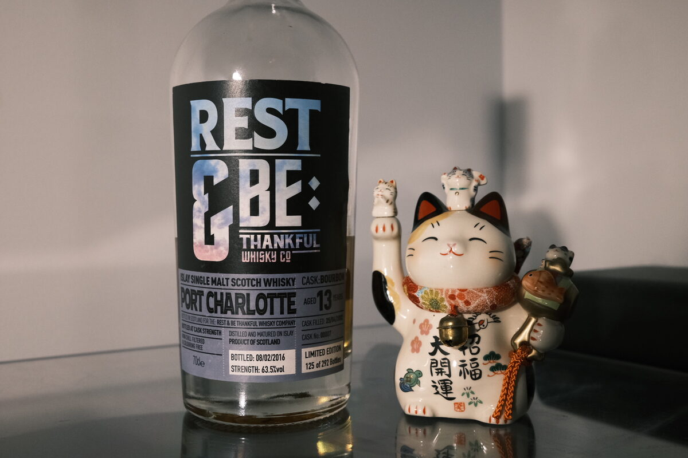

Port Charlotte (Bruichladdich) 2002 Rest & Be Thankful 13 years 63.5% (exbourbon)
Early Port Charlotte – the spirit profile was not even a year old as of this run (25 April 2002). Bottled 2016 from cask 7. From the same outturn as the 2002 Bruichladdich, but couldn’t be more different…
Colour Amber.
Nose Yeah! Funky, vegetal peat. Burning rubber and tire fires. Lit candles dripping with wax and pencil shavings. Dirty smoke. Juicy oranges and their oils. Sandalwood and oak. Second-hand cigar smoke. Blueberry cheesecake. Salty pretzels. There’s a briney note here too that barges in from time to time. Burnt toast with dark roast peanut butter. Roasted almonds. With water, sweeter: caramel and honey. Floral notes.
Palate Upfront: monumental dirty peat. Vegetal, like the nose. Burning tires. Ash and soot. Medicinal and herbal. Eucalyptus. Then into some oily lemon acidity. Mouth-coating, thick, oily texture. Liquorice and fennel. With time, sweet fruit juice. Pancakes and butter. With water, sweet smoke and ash. Intensely peppery and a little savoury – salt and pepper tofu? Rubbery.
Finish Powerful. Dirty smoke. Incense and bonfires. Briney and meaty, mushrooms. Burnt toast. Dark chocolate, roasted hazelnuts, and a sweet, earthy body. Red berries and banana sundaes. Rubbery, herbal. Very long, intensely warming. With water, lemon and orange syrup – acidity balanced by sweetness.
Comments Completely different in quality to the 2002 Bruichladdich. Higher ABV but the alcohol is not an impediment at all. Anyway: this stuff is on a tear. For my money, better than any Octomore. 94/100.

Posted by Dominic on 07 May 2021